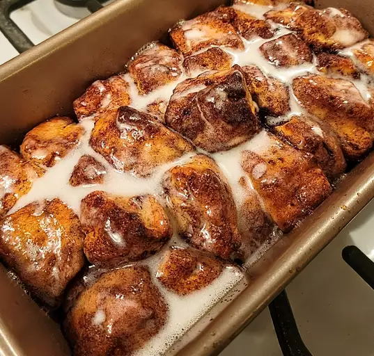

Cinnamon Roll Monkey Bread
Ooey and Gooey! This Cinnamon Roll Monkey Bread is a delicious treat to have
for breakfast, lunch, dinner, or anytime you want!
Best served refrigerated or fresh out-the-oven with melted butter and cinnamon suagr
Ingredients
- 1/2 cup of white sugar
- 1 teaspoon ground cinnamon
- 1(12.4 ounce) package refrigerated cinnamon roll dough with icing
- 1/4 cup unsalted butter, melted
Directions
- Preaheat the oven to 400 degrees F (200 degrees C).
Grease a 9 x 5-inch loaf pan.
- Mix sugar and cinnamon together in a bowl
- Set icing packet aside
Cut cinnamon rolls in quarters.
Dip pieces in melted butter, coat in cinnamon-sugar, and
place in the prepared pan.
-
Bake in the preheated oven until dough has risen and top is golden brown, 20 to 25 minutes;
drizzle icing over top and let cool in the pan for 5 minutes.
Turn the monkey bread out onto a plate and serve warm.
Share your own!
